HCI, Accessibility, and AI
Franklin Mingzhe Li is an incoming Tenure-Track Assistant Professor at the School of Data Science and Society at UNC-Chapel Hill starting from July 2026. Franklin Mingzhe Li is also a Betensky-Kraut Endowed Fellow, a Stuart K. Card Fellow, a NSERC Postgraduate Fellow and a final-year PhD Candidate advised by Prof. Patrick A. Carrington in the Human-Computer Interaction Institute at Carnegie Mellon University. He obtained Master of Science degree supervised by Prof. Khai N. Truong in the Department of Computer Science at the University of Toronto. He also obtained Bachelor of Electrical Engineering at the University of Toronto. His research interests are in Human-Computer Interaction (HCI), Assistive Technology, and Ubiquitous Computing (UbiComp). His research focuses on exploring, designing, and deploying Assistive Technologies for physical space and Activities of Daily Living for people with disabilities. His dissertation aims to support and enable non-visual cooking for people with vision impairments through AI and Assistive Technologies.
I am open to recruit RA starting from Fall 2026 and PhD students starting from Fall 2027!
Recent News
Selected Peer-Reviewed Full Conference or Journal Publications
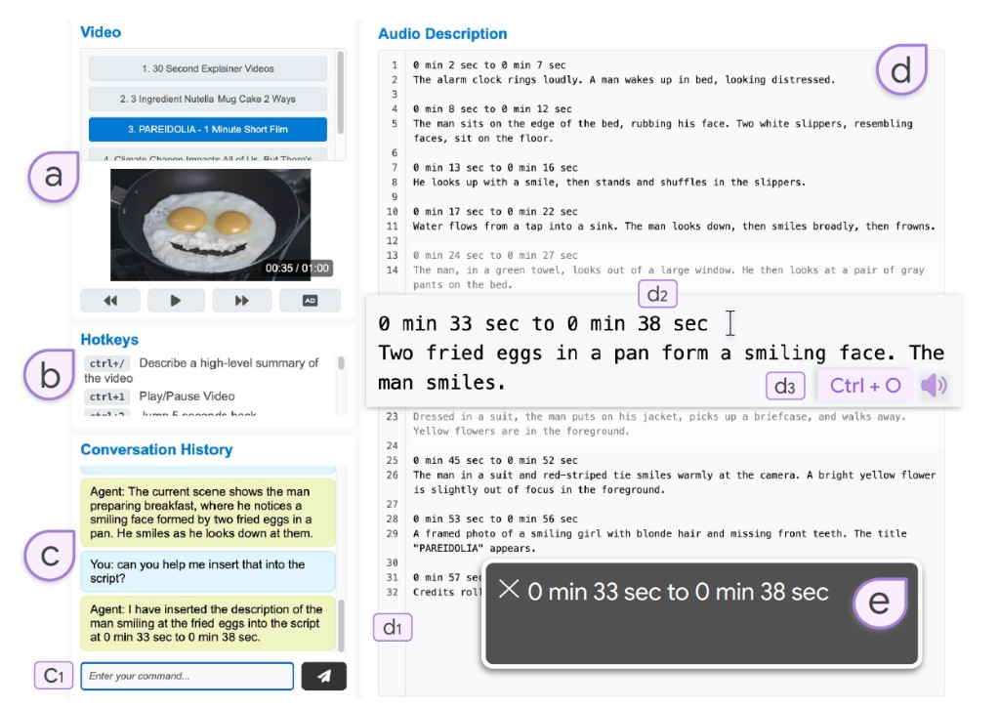
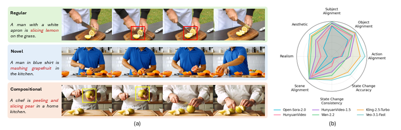

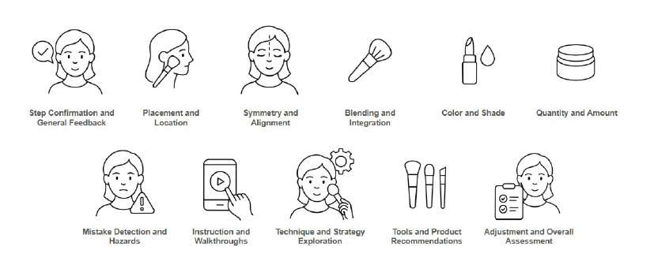

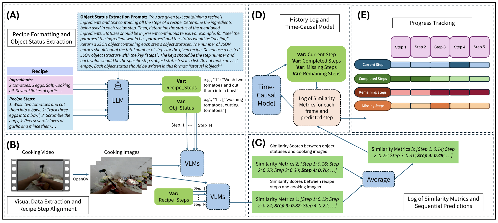
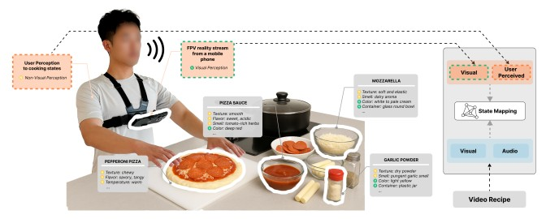
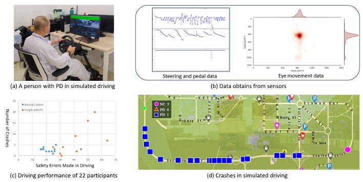


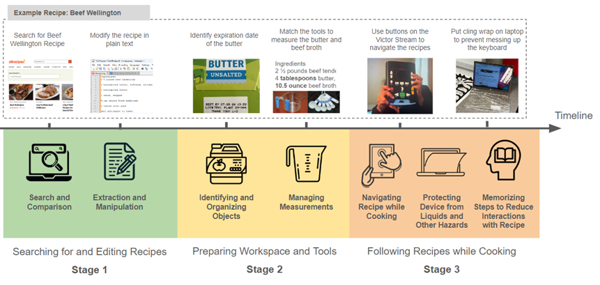

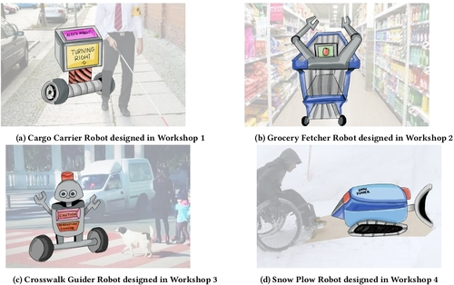
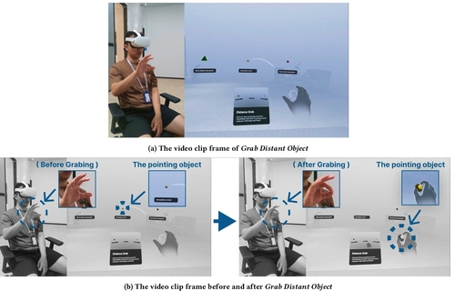
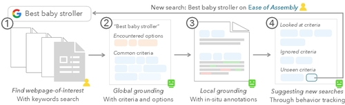
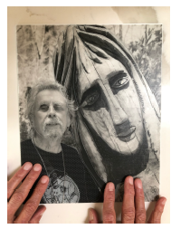
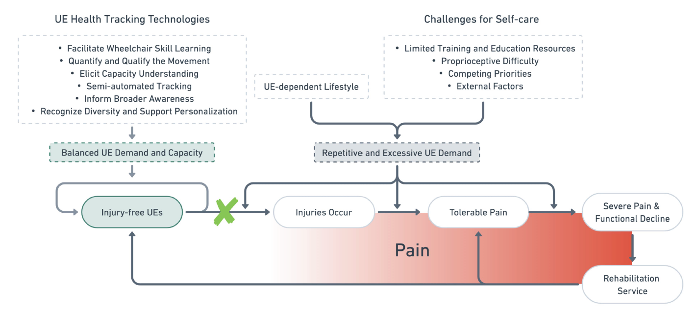
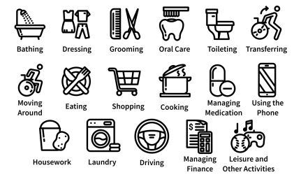
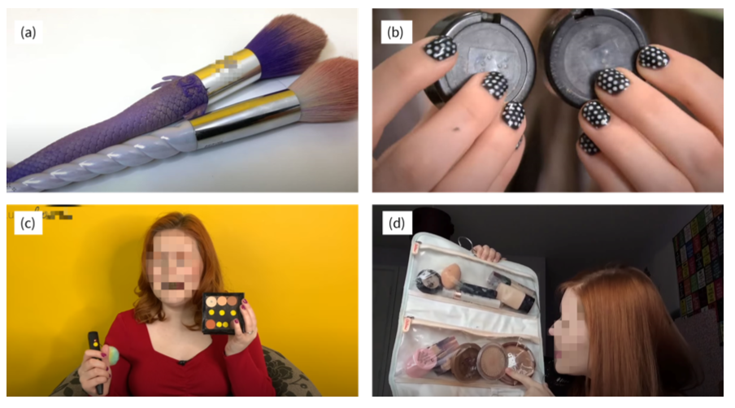
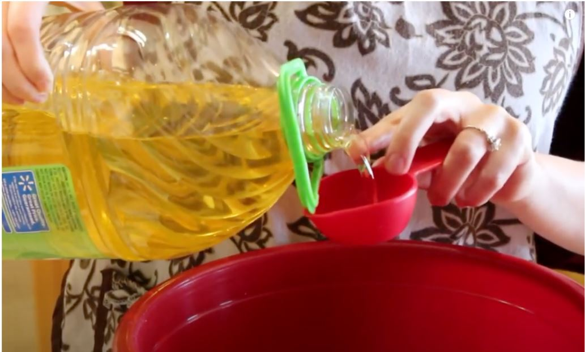

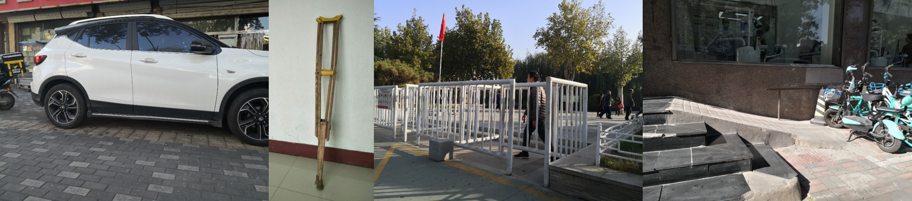
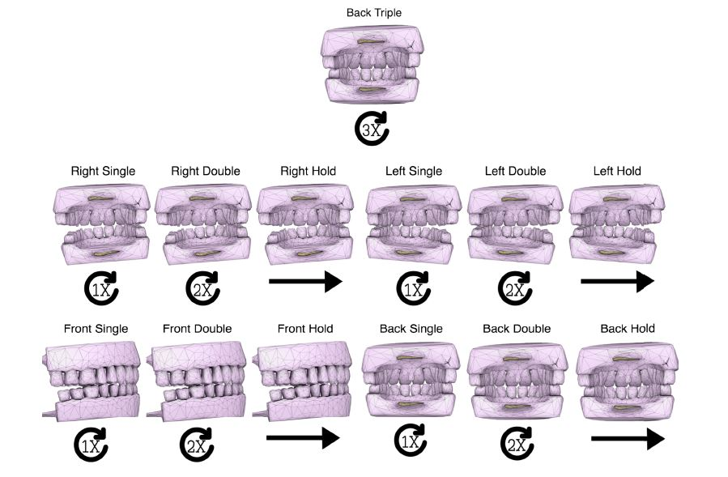
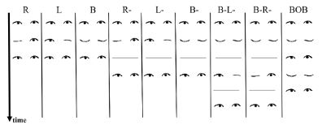
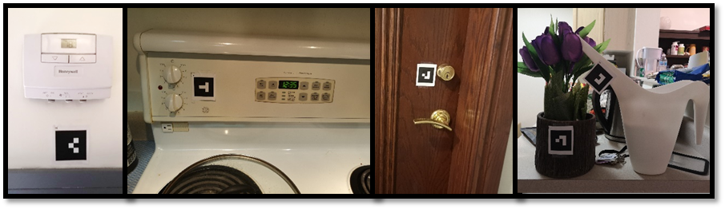

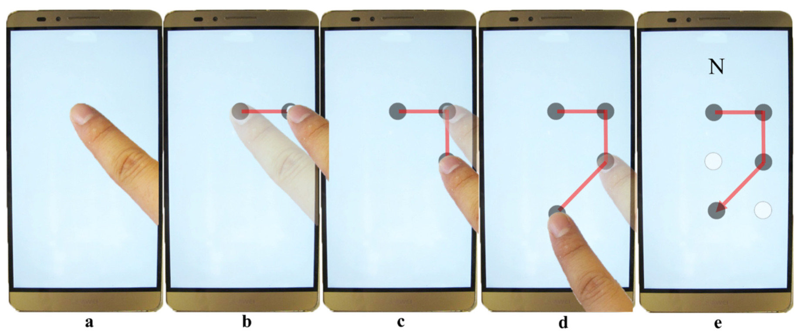
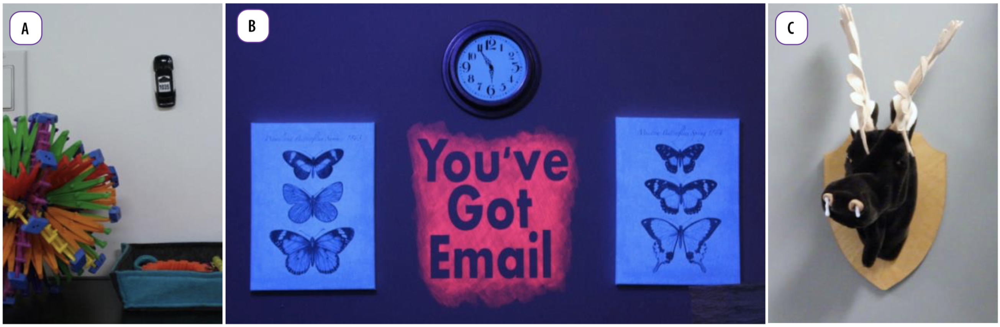
Professional Experiences
2025.05 - 2025.08
Research Intern at Google NYC. Hosted by Dr. Cynthia Bennett, and Dr. Shaun Kane
2019.05 - 2019.09
Research Intern at Apple (Turi). Hosted by Dr. Jeffrey P. Bigham, and Dr. Xiaoyi Zhang
2016.05 - 2017.08
Hardware Engineer at AMD
Grants and Fellowships
NSERC Canada Postdoctoral Research Award (CPRA), Natural Sciences and Engineering Research Council of Canada ($140,000 over 24 Months), Role: PI, Feb 2026 (Declined)
Betensky-Kraut Endowed Fellowship, Carnegie Mellon University, Role: PI, Jan 2026
Academic Research Fund (AcRF) Tier 2, Singapore Ministry of Education ($960,000), Role: Collaborator; PI: Bin Zhu, Aug 2025
Stuart K. Card Fellowship, Carnegie Mellon University ($120,000), Role: PI, Feb 2025
Google's Research Collabs, Google Inc. ($80,000 Plus $20,000 in Google Cloud), Role: Co-PI; PI: Patrick Carrington, Aug 2022
Postgraduate Scholarship-Doctoral, Natural Sciences and Engineering Research Council of Canada (NSERC) ($63,000 over 36 Months), Role: PI, April 2021
Inclusive Design Challenge Award, US Department of Transportation ($300,000), Role: Collaborator; PI: Nik Martelaro; Co-PIs: Patrick Carrington, Sarah Fox, Jodi Forlizzi, Jan 2021
Faculty of Arts And Science Tuition Fellowship, University of Toronto ($18,558), Role: PI, Sept 2018
Faculty of Arts And Science Program-Level Fellowship, University of Toronto ($1000), Role: PI, Nov 2018
Awards and Scholarship
Graduate Student Assembly/Provost Conference Funds, Carnegie Mellon University ($750), Oct 2022
Graduate Student Assembly/Provost Conference Funds, Carnegie Mellon University ($750), Mar 2022
Best Artifact Award, ASSETS 2020 ($500), Oct 2020
Markham Intern of the Year Award Nominee, AMD, Aug 2017
UTRECS Scholarship, University of Toronto ($6000), Aug 2015
Selected Patent
US Patent: On-the-fly calibration for improved on-device eye tracking (2021.08)
Media Coverage and Featuring
Cornell Ann S. Bowers College of Computing and Information Science: AI ring tracks spelled words in American Sign Language (2025.03)
Carnegie Mellon School of Computer Science: Accessing Recipe Information Without Looking (2024.12)
Carnegie Mellon School of Computer Science: New Search Engine Tool Helps Users Make Sense of Unfamiliar Topics (2023.06)
Carnegie Mellon University: Accessibility Enables Equality (2022.08)
Communications of the ACM: Eyelid gestures for people with motor impairments (2022.01)
IEEE Spectrum: The Next Frontier for Gesture Control is Teeth (2021.05)
Mobility21: Mobility21 Researchers Win US Department of Transportation Inclusive Design Challenge Award (2021.01)
New Scientist: Where have I left my wallet? This smart camera can remind you (2019.09)
Community Services
SIGCHI Accessibility Committee
Vice-Chair (2024-present)
Member (2023-2024)
Organizing Committee
Publication Chair (CHI 2025), Accessibility Chair (ASSETS 2025, CHI 2024, CSCW 2023, HCOMP/CI 2023, C&C 2023, C&C 2022, C&C 2021), Inclusion and Broad Participation Chair (Ubicomp 2024), Student Volunteer Co-chair (ASSETS 2022)
Program Committee
Associate Chair (ASSETS 2026, CHI 2026, Ubicomp/ISCW 2025, CHI 2025, ASSETS 2024, CHI 2024, Chinese-CHI 2021, CHI 2020 Late Breaking Works)
Reviewers
CHI 2026 (13), Ubicomp/ISWC 2025 (5), UIST 2025 (1), CHI 2025 (14), IMWUT 2025 (2), ASSETS 2024 (7), UIST 2024 (2), IMWUT 2024 (2) CHI 2024 (13), ASSETS 2023 (2), CHI 2023 (5), TACCESS 2023 (1), IMWUT 2023 (1), UIST 2023 (1), TACCESS 2022 (1), ISS 2022 (2), CHI 2022 (7), CHI 2022 Late Breaking Works (1), ISS 2021 (1), UIST 2021 (1), CSCW 2021 (3), CHI 2021 (4), Chinese-CHI 2021(3), IDC 2021 (1), EICS PACM 2021 (1), UIST 2020 (1), IJHCS (1), CHI 2020 (2), CHI 2020 Late Breaking Works (8), CHI 2019 Late Breaking Works (5)
Student Volunteer
ASSETS 2020
Teaching Experiences and Invited Talks
Co-Instructor: Accessibility and Assistive Technology (05332/632)
Carnegie Mellon University
Invited Talk: Conversational Audio Description Editor
Google LLC, Invited by Dr. Cindy Bennett and Dr. Shaun Kane
Invited Talk: Building Usable Systems for People with Disabilities in Physical Activities
University of Rochester (Mar 2024), Invited by Dr. Yukang Yan
Guest Lecture: Designing Human-Centered Software
Carnegie Mellon University (Mar 2024), Invited by Dr. Aaron Steinfeld
Guest Lecture: Designing Human-Centered Software
Carnegie Mellon University (Feb 2024), Invited by Dr. Sherry Tongshuang Wu
Invited Talk: Building Usable Systems for People with Disabilities in Physical Activities
University of Notre Dame (Oct 2023), Invited by Dr. Toby Jia-jun Li
Guest Lecture: Designing Human-Centered Software
Carnegie Mellon University (Oct 2023), Invited by Dr. Aaron Steinfeld and Dr. Sherry Tongshuang Wu
Teaching Assistant: Designing Human-Centered Software
Carnegie Mellon University (May 2023)
Invited Talk: Leveraging AI for Accessibility in Physical Space
APEX Lab, The Hong Kong University of Science and Technology (HKUST) (Mar 2023), Invited by Dr. Mingming Fan
Invited Talk: Leveraging AI for Accessibility in Physical Space
DGP Lab, University of Toronto (Feb 2023)
Teaching Assistant: User-Centered Research and Evaluation
Carnegie Mellon University (Dec 2022)
Teaching Assistant: CSC258H1S: Computer Organization
University of Toronto (Apr 2019)
Teaching Assistant: CSC258H1S: Computer Organization
University of Toronto (Dec 2018)